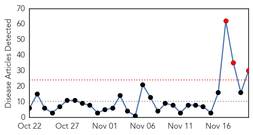
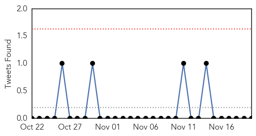
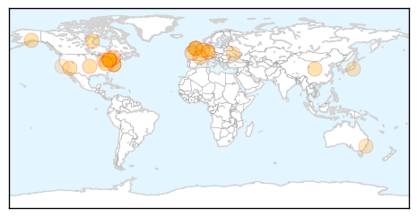
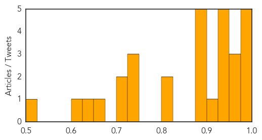

Toggle navigation
Early Warning
Daily Alerts
Influenza
Nov 20, 2014
Compare to:
-
Dengue Fever
Hemmorhagic Fever
Mold/Fungal Infection
Meningitis
Pertussis / Whooping Cough
Middle East Respiratory Syndrome
Cholera
Hepatitis
Chikungunya
Yellow Fever
Bubonic Plague
West Nile Virus
Swine Flu
Ebola
Measles
Unknown
Mumps
30 Day Trends
Web: 3
alerts
, 0
warnings
Twitter: 0
alerts
, 0
warnings
Top Articles:
0.999
Flu season starts in Southern Nevada
0.998
Flu season is already here, claims 1st victim in region
0.998
Could Bird Flu (H1N1) Damage the UK Economy and Weaken the Pound Sterling Exchange Rate? Future Currency Forecast
0.992
What You Need to Know About Fighting the Flu
0.990
First Flu Related Death This Year in Delaware
0.974
Why My Children and I Will Be Getting the Flu Vaccine This Year
0.971
Sussex woman is Delaware’s 1st flu death of season
0.966
Flusurvey to offer self-administered nasal swab to all participants
0.948
ECDC sounds H5N8 warning after another possible outbreak
0.932
Bird Flu Update: Movement Ban in Yorkshire Bites, Ukraine Bans Poultry Meat Imports
0.930
Study hints flu shot effects may last more than one season
0.929
Nasal spray flu vaccine still not covered by Ontario government
0.925
The Netherlands: H5 bird flu detected on Ter Aar chicken farm
0.902
Watch out, it's influenza season
0.893
Ukraine bans poultry imports from UK, the Netherlands and Germany over bird flu
0.892
Figures suggest big number of Albertans rolling up sleeves for flu shot
0.890
Ontario has no plans to make flu shots mandatory for hospital nurses
0.885
Flu shots offered at Toronto clinics, pharmacies
0.881
No shortage of free flu shot
0.807
Alberta Flu Shot Plan Targets Double The People
0.806
Be vigilant against bird flu
0.742
Today's stories from newspapers in Muskoka Region
0.742
Today's stories from newspapers in Muskoka Region
0.742
Today's stories from newspapers in Muskoka Region
0.706
Dutch officials report second bird flu case on chicken farm
0.705
Halting the hijacker: Cellular targets to thwart influenza virus infection
0.651
Second bird flu outbreak found on Dutch farm
0.627
Egg producers face stockpiles as AI restrictions start to bite
0.617
Increasing immunity rates
0.524
Villager's remains lead to 1918 flu breakthrough
Top Tweets:
No tweets found for Nov 20, 2014
Web/News Articles

Tweets

Article Locations

Article Confidences
